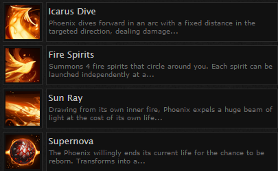

| Aguileramon L:21 |
| Aguileramon is a fire type avatar. It is a short and stout Tyrannosaurus rex-like Avatar standing about 3 feet tall, and has amber orange skin and light green eyes. It also has flattened forearms with broad, three-clawed hands, though early artwork for the Avatar virtual pet depicted its hands with four claws, and distinct pectoral muscles. Its legs and arms are shown to be very vascular. Its tail is stubby, and its head and snout are almost as large as the rest of its body. |
| Available Points for Upgrade: 6 |
| STR | 30 | |
| INT | 18 | |
| AGI | 23 | |
| WILL | 20 | |
| DEX | 25 |
| Attacks Learned |
|  |